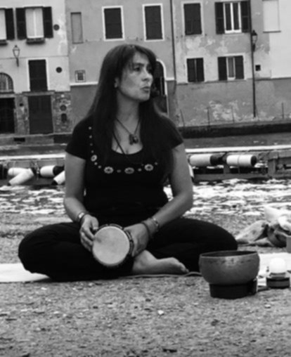

Chantale D'Errico
Insegnante Yoga · Operatrice Reiki
Insegnante yoga certificata, con una formazione ampia che copre i principali stili e pratiche: dal dinamismo del Vinyasa alla quiete terapeutica dello Yin, dal lavoro meridiano del QiYoga fino alle aree più delicate — gravidanza, bambini, terza età. Operatrice Reiki Usui Universale di primo livello, accompagna la pratica anche con la conoscenza degli oli essenziali e dei cristalli. Opera in Liguria.
◉ Tariffe da concordare direttamente con la professionista